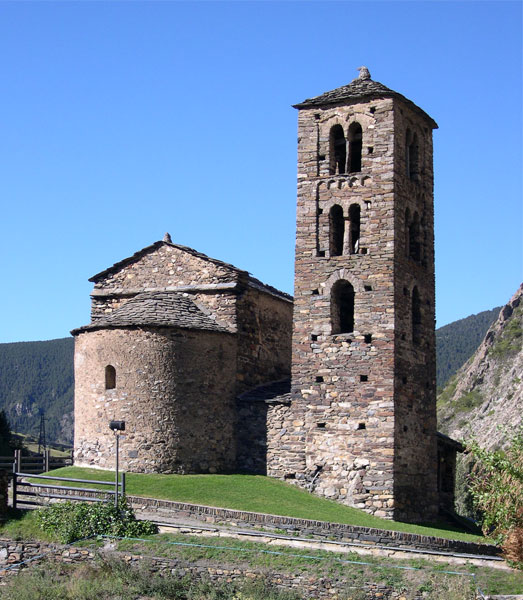

Canillo
- Meritxell
- Roc del Quer
- Palau de Gel

GRATUITO.
El Roc del Quer es el mirador más espectacular de todo Andorra. Para llegar hasta él, debéis girar a la izquierda en la primera rotonda del pueblo que hay delante de la gasolinera, para comenzar a subir por la montaña, y llegaréis en unos 15 minutos. Justo antes de llegar hay un amplio aparcamiento a la izquierda.
Se trata de una pasarela de reciente inauguración, que sobresale de la montaña ofreciendo unas vistas panorámicas realmente increíbles, y que nos situará a medio kilómetro por encima del suelo, cosa que además podremos divisar mirando hacia abajo a través de alguna de las secciones transparentes de su suelo.